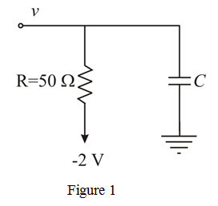
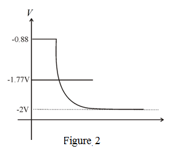

Step 1:
Consider the load capacitance as ‘C’.
The characteristics are as the input of the gate rises, the output emitter follower cuts off and the load capacitance ‘C’ discharges through the  load resistance (until the emitter follower conducts again).
load resistance (until the emitter follower conducts again).
Consider the circuit diagram as shown in Figure 1.

Step 2:
Given that the two output levels of the emitter follower are -0.88 V and -1.77 V.
The steady state output is shown in Figure 2.

Step 3:
The steady state output is,
Given that, after the output voltage is equal to .
Now the above equation becomes as
Therefore , the value of capacitor is .